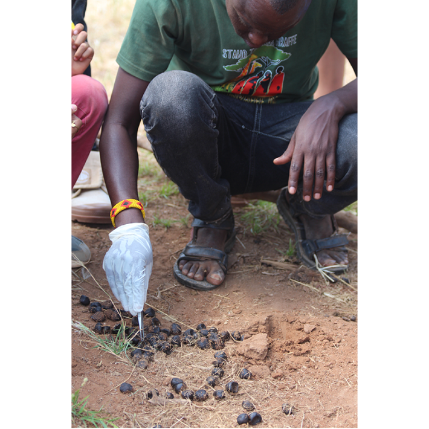

It kind of looks like a Hershey’s kiss,” says Jenna Stacy-Dawes.
She is talking about giraffe poop. The scat are surprisingly small for an animal that can grow to the height of two stacked basketball hoops in adulthood. The best samples are at the top of the pile, she tells the team of researchers assembled before her in a field camp in Kenya. That preserves the outermost layer, the part that rubs against the animal’s intestines.
Stacy-Dawes is teaching the researchers about a radical new method of tracking vulnerable giraffe. We know surprisingly little about giraffes, Stacy-Dawes tells me later, and these tiny scats can reveal a lot. “What can we get from poop data? Everything,” she says. What food they’re eating, their habitat preferences, what species they belong to, and perhaps, eventually, what subspecies. This would be especially useful information, as some giraffe subspecies are critically endangered.
“Giraffe just haven't been studied,” says Stacy-Dawes, an expert on population sustainability of wild animals based at the San Diego Zoo Wildlife Alliance (SDZWA). “There is a weird perception of like, ‘well, I see them everywhere’—in documentaries, zoos, or on safari—'so they must be good.’ Unfortunately, that's not the case. There’s only one giraffe for every four elephants in Africa.” Little is known about the basic biology, behavior, and diet of the giraffe, she says.

SCAT SEEKING: Field ecology coordinator Moses Okombo examines giraffe poop at Loisaba Conservancy in Laikipia County, Kenya. Photo courtesy of San Diego Zoo Wildlife Alliance.
Traditional methods of tracking these long-necked creatures over long distances are complicated, expensive, and even dangerous. They involve fitting individual giraffe with trackers, which are usually snapped around the animal’s tail. The trackers can give precise geolocation information over a period of months and sometimes years. But this requires immobilizing the large animals using tranquilizers. Collecting and analyzing scat is a much cheaper, more efficient, and more humane way of keeping track of their movements.
“Giraffe react really poorly to the drugs that are used to bring them down. [Veterinarians] are not sure why,” Stacy-Dawes says. After they are dosed with the drugs, “the giraffe just run. They take off in a full-blown sprint and get this stargazing look in their eyes. They're not really paying attention to where they're going” Stacy-Dawes says. The result is dangerous for both animals and the field team, who bring the drugged giraffe down to the ground using ropes.
“Fitting giraffes with trackers is very, very complicated,” agrees Mrinalini Erkenswick Watsa, a colleague of Stacy-Dawes from SDZWA. “Whereas, you literally can't walk more than 10 feet in the savanna without stumbling over giraffe fecal material. It's ubiquitous, and it's easier on the animal. It's also considerably cheaper for us.”
Erkenswick Watsa is a geneticist developing the molecular toolkit for analyzing the fecal samples. Mostly, the work involves adapting existing technology to the newly reclassified four species of giraffe, but Erkenswick Watsa also has an eye on making it practical to use a genetic kit directly in the field. “I would ideally want to see us going toward something like a COVID test,” Erkenswick Watsa says, “which can be run overnight by a vet with minimal lab training.”
“What can we get from poop data? Everything.”
Giraffe can travel over thousands of kilometers, but some choose to stay local, while others aggregate in groups of hundreds of individuals, Stacy-Dawes says. So-called “fission-fusion” groups have been observed, where individuals that are unrelated choose to herd together, sometimes an adult and a juvenile that are not related. “There’s so much about social structure we just don’t know. Do we see bulls sticking around? How frequent are fission-fusion groups? We have no idea,” says Stacy-Dawes.
The reclassification of giraffe is recent, officially announced by the IUCN in August of 2025, regrouping what was once considered one species into a distinct four: the Masai, reticulated, Southern, and Northern giraffe species, splintered further into a total of seven subspecies. (Scientists including Stacy-Dawes have been working with this classification for a few years prior to IUCN’s formal announcement.) But even experts cannot tell them apart visually. “Coat pattern or what they call ‘pelage,’ is not a good tool to tell the different flavors of giraffe,” says Julian Fennesssy, director of the Giraffe Conservation Foundation. Stacy-Dawes says that the similarities in appearance conceal species that are as different as “a polar bear is to a grizzly bear.”
“Over the last 300 years giraffe range has reduced by 90 percent across Africa,” says Fennessy, a number that matches what the Giraffe Conservation Foundation estimates was lost in terms of giraffe population. “They lost most of their habitat due to human population growth, associated agriculture, [landscape] fragmentation, and so on. Humans doing what they do,” says Fennessy.
Read more: “The Giraffe Neck Evolved for Sexual Combat”
Presently, the four species are facing different levels of threat. “The conservation status on the Red List is outdated because [giraffe] were assessed as one species,” says Fennessy. “Now that they have been recognized as four species the IUCN will go through the reassessment for each of those four species, but definitely some of them we know are critically endangered, some are endangered, and some are likely to be listed as ‘least concern,’ like the Southern African giraffe,” Fennessy says.
Where there is famine, civil war, or both, giraffe are consumed as food. “It’s often termed ‘war fodder,’” Fennessy says. “Because if [militants] are taking out ivory or horns, and they are getting funding from it, well, they are not eating those animals. They prefer to eat giraffe, they are calling it a sweet meat,” Fennessy says. “One bullet brings a hell of a lot of food for people. They were used to feed armies.”
In other countries, like South Africa, giraffe populations have been actively managed for conservation, with individuals translocated either to bolster populations in national parks, or rescued from conflict areas. Some of the historical translocations were done without recognizing the differences in species, Stacy-Dawes says. This means that some animals are living in territory that is unfamiliar to them.
“Over the last 300 years, giraffe range has reduced by 90 percent across Africa.”
“Fecal tests [which confirm species ID through genetics] allow us to say: No, we shouldn't translocate this individual to that part of the country because it would not be found there originally,” says Stacy-Dawes. The Giraffe Conservation Foundation has plans to reverse some of the translocations that moved animals to the wrong habitat.
In 2019, together with Fennessy and colleagues from Germany, the United States, Zambia, and Namibia, Stacy-Dawes published research that updated the geographic range maps for the four giraffe species across sub-Saharan Africa. The study, which updated the record by a few decades, according to Stacy-Dawes, was based mostly on aerial and some ground observations of giraffe, including tagged individuals. Stacy-Dawes believes this dataset can benefit from further datapoints and more precise species identification.
“There's parts of Southern Ethiopia or Western Somalia where there could be giraffe, but people just don't go there. And even in places where we can go, it is expensive to collect ground data.” Fecal studies can complement, and in some instances replace, direct observation and handling of the animals, Stacy-Dawes says.
After their training, the field research team set out in search of giraffe. They returned late in the evening, looking exhausted but content. Over the course of 12 hours they had managed to track down 24 animals, stalking each one until it relieved itself of a fresh sample of scat. Feces were matched to individuals, who were carefully photographed and identified in the field. Knowing the sex and estimated age of the giraffe, will help make sense of the genetics. Dusty and sunbeaten, the team recalled prospectors who had spent a successful day in search of rare minerals.
“Poop is gold,” Erkenswick Watsa says. “It’s the most precious thing we can get.” 
Lead image: EcoPrint / Shutterstock